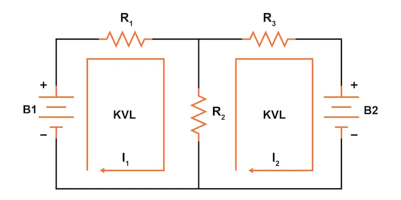
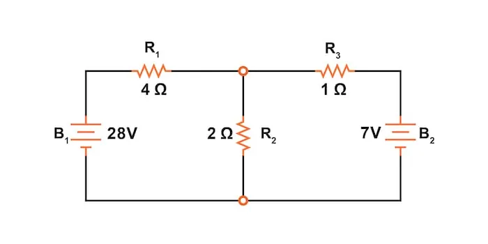
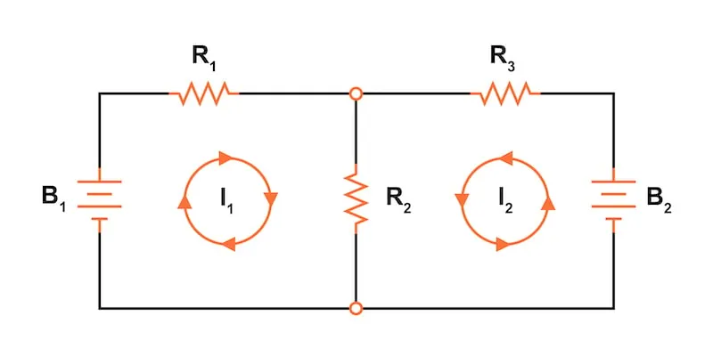
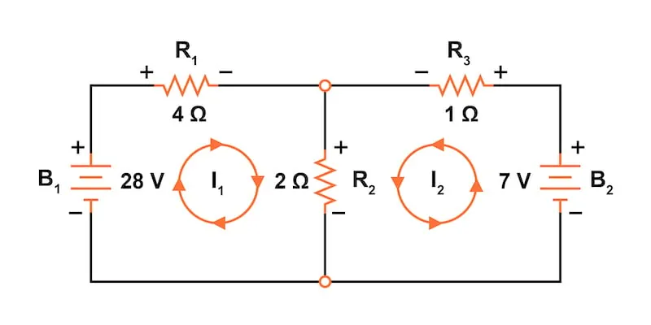
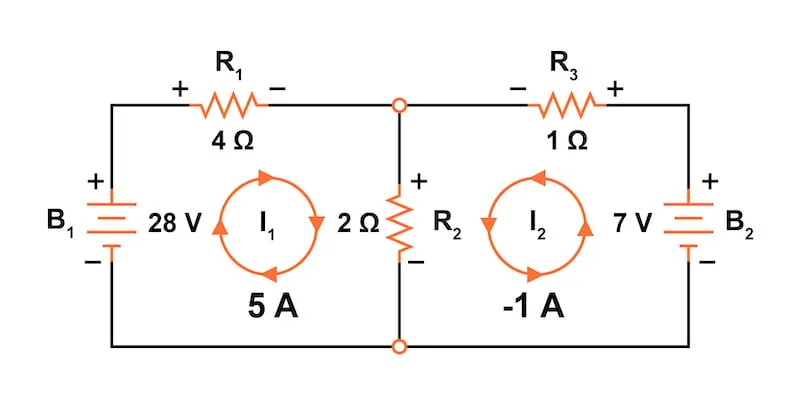
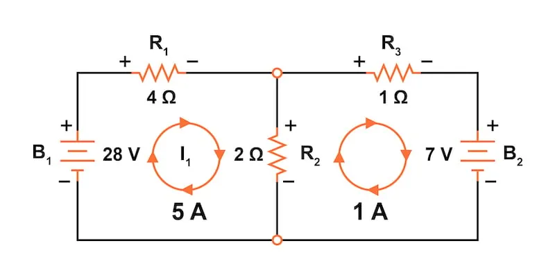
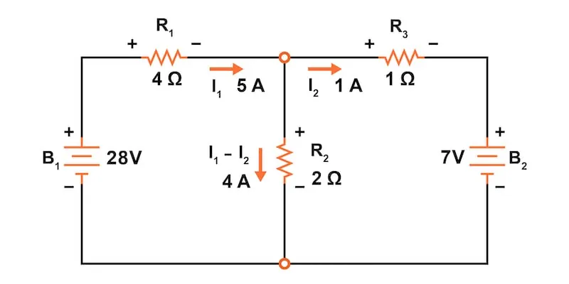
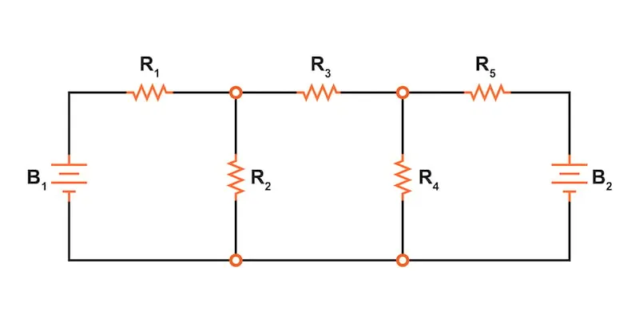
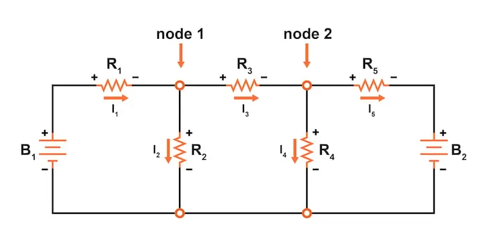
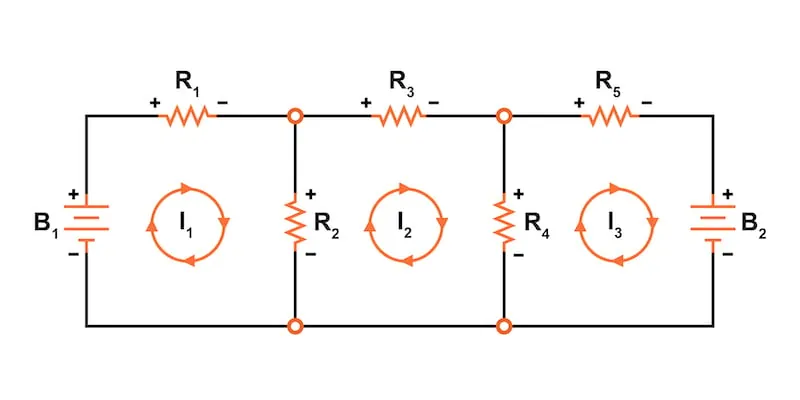

The mesh current method is a network analysis technique where mesh (or loop) current directions are assigned arbitrarily, and then Kirchhoff’s voltage law (KVL) and Ohm’s law are applied systematically to solve for the unknown currents and voltages.
This page provides a step-by-step introduction to using the mesh current method (also known as the loop current method) for analyzing electrical circuits. The mesh current method uses simultaneous equations, Kirchhoff’s voltage law (KVL), and Ohm’s law to determine unknown currents in a network.
The mesh current method is quite similar to the branch current method. However, it does not use Kirchhoff’s current law (KCL), and it is usually able to solve a circuit with fewer unknown variables and fewer simultaneous equations.
Diving into the mesh current method, it’s important to note that we’ll be using the same example circuit (Figure 1) that we’ve been using to introduce other network analysis methods:

The first step in the mesh current method is identifying and labeling the current “loops” within the circuit. To do this, we must find at least one loop current passing through every component in the circuit.
In our example circuit (Figure 2), the loop formed by B1, R1, and R2 will be the first loop, while the loop formed by B2, R2, and R3 will be the second.

The strangest part of the mesh current method is envisioning circulating currents in each of the loops. In fact, this method gets its name from the idea of these currents meshing together between loops like sets of spinning gears.
The choice of each current loop’s direction is entirely arbitrary; however, the resulting equations are often easier to solve if the currents are going in the same direction through components with multiple current loops. For example, note how currents I1 and I2 both flow “down” through resistor R2, where they “mesh” or intersect. If the assumed direction of a mesh current is wrong, the answer for that current will have a negative value.
The next step is to label all voltage drop polarities across resistors according to the assumed directions of the mesh currents, as shown in Figure 3.

Remember that the “upstream” end of a resistor will always be positive, and the “downstream” end of a resistor negative. This situation happens because the resistor is a load that drops voltage when current flow through it.
As a note, battery polarities are dictated by their symbol orientations in the diagram and may or may not “agree” with the resistor polarities and assumed loop current directions.
Using Kirchhoff’s voltage law, we can now step around each of these loops, generating equations representative of the component voltage drops and polarities. As with the branch current method, we will denote a resistor’s voltage drop as the product of the resistance (in ohms) and its respective mesh current (that quantity being unknown at this point). Where two currents mesh together, we will write that term in the equation, with the resistor current being the sum of the two meshing currents.
The starting point for tracing the voltage drops around each loop is arbitrary, the same as the direction we trace. Beginning with the left loop of the circuit, let’s start at the lower-left corner and trace clockwise, counting polarity as if we had a voltmeter in hand, red lead on the point ahead, and black lead on the point behind. For the left loop with current I1, we get the following equation:
$$28 - R_1I_1 - R_2(I_1+I_2) =28 - 4I_1 - 2(I_1+I_2) = 0$$
Notice that the middle term of the equation uses the sum of mesh currents I1 and I2 as the current through resistor R2. This is because mesh currents I1 and I2 are going in the same direction through R2 and thus complement each other.
We can distribute the coefficient of 2 to the I1 and I2 terms and then combine the I1 terms to simplify the equation as:
$$28 - 4I_1 - 2I_1 - 2I_2 = 28 - 6I_1 - 2I_2 = 0$$
At this time, we have one equation with two unknowns. To be able to solve for two unknown mesh currents, we must have two equations.
Now let’s repeat the process for the right loop of the circuit with current I2. This will provide us with another KVL equation. With two equations and only two unknown currents, we can solve for the currents. As a creature of habit, we’ll again start at the lower-left corner of the right loop and trace clockwise:
$$R_2(I_1+I_2) +R_3I_2 -7 = 2(I_1+I_2) + 1I_2 - 7 = 0$$
Simplifying the equation as before, we end up with:
$$2I_1 + 2 I_2 + 1I_2 - 7 = 2I_1 + 3I_2 - 7 = 0$$
Now, with two equations, we can use any of several methods to mathematically solve for the unknown currents I1 and I2. First, let’s rearrange the two equations for an easier solution:
$$6I_1 + 2I_2 = 28$$
$$2I_1 + 3I_2 = 7$$
Now, solving for the currents, we get:
$$I_1 = 5 \text{ A}$$
$$I_2 = -1 \text{ A}$$
Knowing that these solutions are values for mesh currents, not branch currents, we must go back to our diagram to see how they fit together to give currents through all components (Figure 4).

The solution of -1 A for I2 means that our initially assumed current direction was incorrect. In actuality, I2 flows in a clockwise direction at a value of +1 A. With this correction, let’s redraw our circuit by changing the current flow direction for I2 and the voltage drop for resistor R3, as shown in Figure 5.

Now, from these mesh currents, we can determine the branch currents for our circuit. We can easily see that the current through B1 and R1 is 5 A since only mesh current I1 passes through those two circuit components. Similarly, a current of 1 A is flowing through R3 and into B2.
After that, you might question, what about the R2? It has two mesh currents passing through it. Mesh current I1 is 5 A going “down” through R2, while mesh current I2 is 1 A going “up” through R2.
To determine the actual current through R2, we must see how the mesh currents I1 and I2 interact. In this case, they’re in opposition—flowing in opposite directions. We can algebraically add them to arrive at a final value:
$$I_{R2} = I_1 - I_2 = 5 - 1 = 4 \text{ A}$$
The current through R2 must be a value of 4 A, going “down.” All of the branch currents are shown in Figure 6.

Now that we know all of the branch currents, we can use Ohm’s law to calculate the unknown voltage drops across the resistors in the circuit.
$$V_{R1} = I_{R1}R_1 = I_1R_1 = 5\cdot4 = 20 \text{ V}$$
$$V_{R2} = I_{R2}R_2 = (I_1-I_2)R_1 = (5-1)\cdot 2 = 8 \text{ V}$$
$$V_{R3} = I_{R3}R_3 = I_2R_3 = 1\cdot1 = 1 \text{ V}$$
We could check our results by returning to Kirchhoff’s voltage law for our two loops:
$$V_{B1} - V_{R1} - V_{R2} = 28 - 20 - 8 = 0 \text{ V}$$
$$V_{R2} - V_{R3} - V_{B2} = 8 - 1 - 7 = 0 \text{ V}$$
The primary advantage of mesh current analysis is that it generally allows for the solution of a large network with fewer unknown values and fewer simultaneous equations. In our example circuit, it requires three equations to solve the branch current method and only two equations using the mesh current method. This advantage can be more pronounced in networks with increased complexity, such as the circuit shown in Figure 7.

To solve this network using branch currents, we’d have to establish five variables to account for each and every unique current in the circuit (I1 through I5), as demonstrated in Figure 8.

This would require five equations for the solution in the form of two KCL equations at the nodes and three KVL equations for the loops:
For the circuit of Figure 8, our five equations would be:
$$I_1 - I_2 - I_3 = 0$$
KCL at node 1$$I_3 - I_4 - I_5 = 0$$
KCL at node 2$$V_{B1} - I_1R_1 - I_2R_2 = 0$$
KVL of the left loop$$I_2R_2 - I_3R_3 - I_4R_4 = 0$$
KVL of the middle loop$$I_4R_4 - I_5R_5 - V_{B2} = 0$$
KVL of the right loopAll in all, if you have nothing better to do with your time than to solve for five unknown variables with five equations, you might not mind using the branch current method of analysis for this circuit. However, for those of us who have better things to do with our time, the mesh current method is a whole lot easier, requiring only three unknowns and three equations to solve, as illustrated in Figure 9.

Our three KVL equations using the mesh current method are:
$$V_{B1} - I_1R_1 - (I_1-I_2)R_2 = 0$$
KVL of the left loop$$(I_2-I_1)R_2 - I_2R_3 - (I_2-I_3)R_4= 0$$
KVL of the middle loop$$(I_3-I_2)R_4 - I_3R_5 - V_{B2}= 0$$
KVL of the right loopWith fewer equations to work with, this method has a clear advantage, especially when performing a simultaneous equation solution by hand without a calculator or computer.